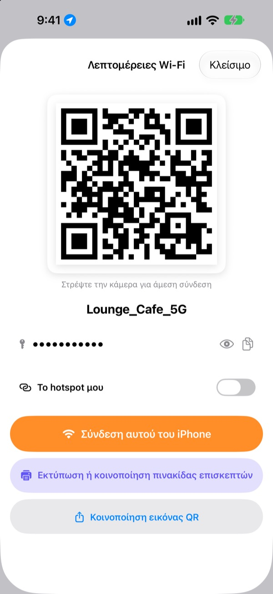
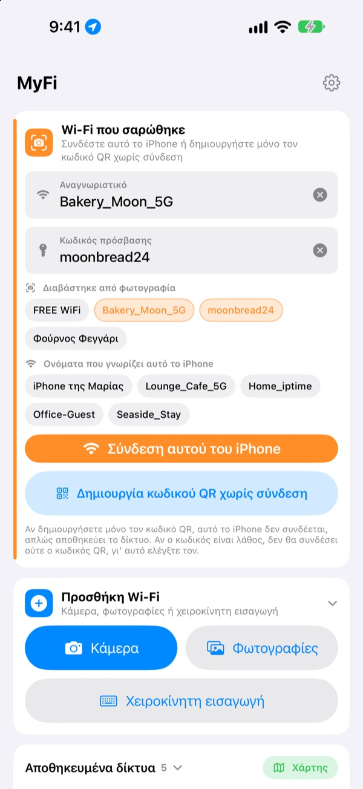
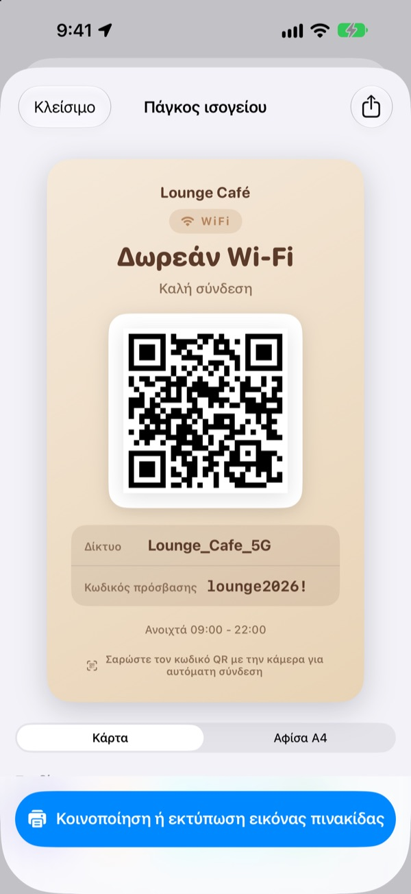
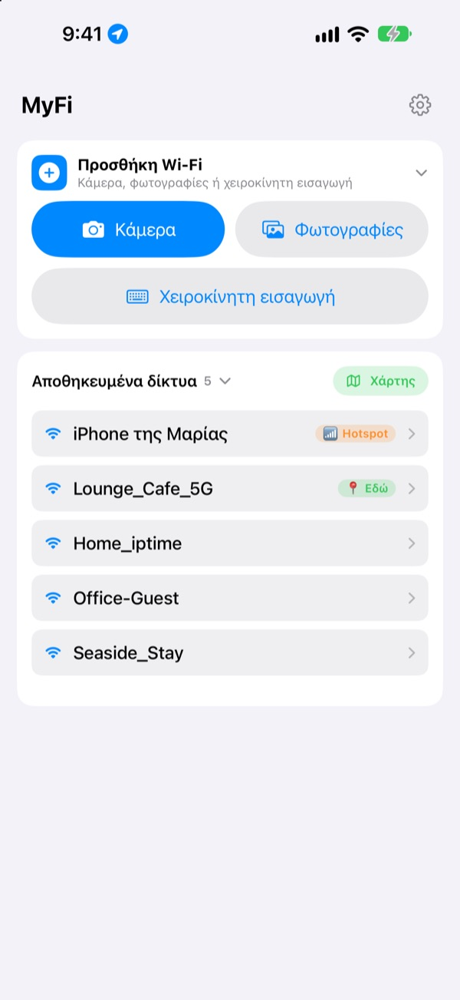

Μην υπαγορεύετε πια τον κωδικό.
Δείξτε έναν QR.
Οι φίλοι στρέφουν απλώς την κάμερα και συνδέονται. Η πινακίδα στον τοίχο της καφετέριας; Μία φωτογραφία και το iPhone συνδέεται. Τέλος τα λάθη στην αντιγραφή.
Όλες οι λειτουργίες είναι δωρεάν. iPhone με iOS 17 ή νεότερο.

Φτιάξτε τον κωδικό QR του Wi-Fi σας
Αλλάξτε όνομα ή κωδικό και η πινακίδα αλλάζει αμέσως. Στρέψτε πάνω της την κάμερα ενός κινητού και θα εμφανιστεί πραγματικά η πρόταση σύνδεσης.
«Ποιος ήταν ο κωδικός του Wi-Fi;» Πόσες φορές σήμερα;
Τον λέτε δυνατά και μπερδεύετε κεφαλαία με πεζά. Αντιγράφετε την πινακίδα από τον τοίχο και μπερδεύετε το 0 με το O. Και μετά τα εξηγείτε ξανά. Το MyFi τα κάνει όλα μία φωτογραφία και έναν κωδικό QR.
Μία φωτογραφία και συνδεθήκατε
Φωτογραφίστε την πινακίδα Wi-Fi ή την απόδειξη, ή διαλέξτε μια εικόνα από τις Φωτογραφίες. Το MyFi διαβάζει όνομα δικτύου και κωδικό και συνδέει το iPhone. Αν η πινακίδα έχει και κωδικό QR, τον διαβάζει πρώτα, ώστε τα στοιχεία να είναι ακριβή.
Αν το κείμενο δεν είναι καθαρό, σύρετε ένα κομμάτι από τη φωτογραφία στο πεδίο του ονόματος ή του κωδικού.

Φτιάξτε και τυπώστε πινακίδα επισκεπτών
Διαλέξτε ένα από τα 7 θέματα και προσθέστε όνομα, λογότυπο και γραμμές όπως το ωράριο. Επιλέξτε κάρτα ή κάθετη αφίσα A4, αποθηκεύστε την ως εικόνα ή τυπώστε την αμέσως με AirPrint.
Κρατήστε πολλές πινακίδες, μία για κάθε κατάστημα ή τραπέζι, και αλλάξτε τις όποτε θέλετε.

Όπου επιστρέφετε, εμφανίζεται πρώτο
Τα δίκτυα που συνδέεστε ή μοιράζεστε αποθηκεύονται μαζί με το μέρος. Όταν επιστρέφετε, εκείνο το δίκτυο είναι πρώτο στη λίστα, και όλα τα αποθηκευμένα μέρη φαίνονται σε χάρτη.
Βάλτε τον κωδικό QR του Wi-Fi που μοιράζεστε συχνότερα ως widget στην οθόνη Αφετηρίας ή στην οθόνη κλειδώματος. Όταν ρωτήσει ένας επισκέπτης, απλώς δείξτε την οθόνη.

Ξεκινάτε σε τρία βήματα
- 1
Ανοίξτε την εφαρμογή
Ζητά μία φορά την τοποθεσία, γιατί το iOS δίνει το όνομα του τρέχοντος Wi-Fi μόνο σε εφαρμογές με αυτή την άδεια.
- 2
Φωτογραφίστε ή πληκτρολογήστε
Φωτογραφίστε μια πινακίδα ή γράψτε μία φορά τον κωδικό του δικού σας Wi-Fi.
- 3
Συνδεθείτε ή δείξτε
Συνδέστε αυτό το iPhone ή δείξτε τον κωδικό QR στην κάμερα του άλλου.
Πού θα το βρείτε
- Σύνδεση από φωτογραφία πινακίδας
Προσθήκη Wi-Fi, μετάΚάμεραήΦωτογραφίες, μετάΣύνδεση αυτού του iPhone- Πληκτρολόγηση στοιχείων
Προσθήκη Wi-Fi, μετάΧειροκίνητη εισαγωγή- Μόνο δημιουργία κωδικού QR
Δημιουργία κωδικού QR χωρίς σύνδεση- Αποστολή του QR σε μήνυμα
- Πατήστε ένα αποθηκευμένο δίκτυο, μετά
Κοινοποίηση εικόνας QR - Πινακίδα επισκεπτών
- Πατήστε ένα αποθηκευμένο δίκτυο, μετά
Εκτύπωση ή κοινοποίηση πινακίδας επισκεπτών - Το hotspot σας ως QR
- Πατήστε ένα αποθηκευμένο δίκτυο και ενεργοποιήστε το
Το hotspot μου - Σύνδεση ή κοινοποίηση με ένα σάρωμα
- Στη λίστα σαρώστε δεξιά για σύνδεση, αριστερά για κοινοποίηση
- Προβολή αποθηκευμένων μερών
Χάρτης, δίπλα σταΑποθηκευμένα δίκτυα- QR στην οθόνη Αφετηρίας
- Αγγίξτε παρατεταμένα την οθόνη Αφετηρίας και προσθέστε το widget
QR Wi-Fiτου MyFi
Μπορείτε επίσης να ανοίξετε αμέσως τον κωδικό QR με το Siri ή την εφαρμογή Συντομεύσεις.
Όλες οι λειτουργίες είναι δωρεάν
Δωρεάν
- Σύνδεση σε Wi-Fi από φωτογραφία
- Δημιουργία κωδικών QR και κοινοποίηση ως εικόνα
- Πινακίδες επισκεπτών σε 7 θέματα, κάρτα ή αφίσα A4, εκτύπωση με AirPrint
- Widget για οθόνη Αφετηρίας και οθόνη κλειδώματος
- Χάρτης των αποθηκευμένων Wi-Fi
- Χωρίς διαφημίσεις, χωρίς εγγραφή
Φιλοδώρημα (προαιρετικό)
- Αν σας αρέσει, μπορείτε να στηρίξετε την ανάπτυξη με ένα φιλοδώρημα
- Το φιλοδώρημα δεν ξεκλειδώνει τίποτα. Και χωρίς αυτό έχετε όλες τις λειτουργίες
Το φιλοδώρημα είναι μια μικρή εφάπαξ πληρωμή.
Χωρίς συνδρομές και χωρίς επί πληρωμή λειτουργίες.
Συχνές ερωτήσεις
Γιατί πρέπει να γράψω μόνος τον κωδικό;
Το iOS δεν επιτρέπει σε καμία εφαρμογή να διαβάσει τους κωδικούς Wi-Fi που είναι αποθηκευμένοι στη συσκευή. Γι’ αυτό το MyFi βρίσκει το όνομα του δικτύου και εσείς γράφετε τον κωδικό μία φορά. Μετά χρησιμοποιεί τον αποθηκευμένο.
Δεν βλέπω το όνομα του Wi-Fi όπου είμαι συνδεδεμένος.
Το iOS δίνει το όνομα του Wi-Fi μόνο σε εφαρμογές με πρόσβαση στην τοποθεσία. Επιτρέψτε το MyFi στις Ρυθμίσεις › Απόρρητο και ασφάλεια › Υπηρεσίες τοποθεσίας. Η τοποθεσία χρησιμοποιείται μόνο για να διαβαστεί το όνομα του δικτύου και να αναγνωρίζονται τα μέρη όπου επιστρέφετε.
Το όνομα ή ο κωδικός διαβάστηκε λάθος.
Πλησιάστε και φωτογραφίστε ίσια. Αν είναι ακόμα λάθος, σύρετε το σωστό κομμάτι από τη φωτογραφία στο πεδίο ή διορθώστε το με το χέρι. Αν η πινακίδα έχει κωδικό QR Wi-Fi, το MyFi τον διαβάζει και συμπληρώνει τα ακριβή στοιχεία.
Ποιες πινακίδες μπορεί να διαβάσει;
Τα πάει καλύτερα με πινακίδες στα αγγλικά ή τα κορεατικά, με ετικέτες όπως ID, PW, SSID, Network ή Password. Ακόμα και χωρίς ετικέτες βρίσκει τη γραμμή που μοιάζει με κωδικό. Ο κωδικός QR Wi-Fi μιας πινακίδας διαβάζεται με ακρίβεια σε οποιαδήποτε γλώσσα.
Πώς συνδέεται κάποιος με τον κωδικό QR μου;
Σε iPhone ή Android, αρκεί να στρέψει την ενσωματωμένη κάμερα στον κωδικό και να πατήσει την πρόταση σύνδεσης. Δεν χρειάζεται εφαρμογή.
Μπορούν άλλοι να δουν τον κωδικό μου;
Ο κωδικός QR περιέχει τα συνηθισμένα στοιχεία σύνδεσης Wi-Fi. Εσείς αποφασίζετε πάντα αν θα τον μοιραστείτε, και στην πινακίδα επισκεπτών μπορείτε να κρύψετε τον κωδικό.
Γιατί δεν συνδέομαι στο δικό μου hotspot;
Το Προσωπικό hotspot του iPhone είναι το ίδιο το κινητό, που δεν μπορεί να συνδεθεί στον εαυτό του. Ενεργοποιήστε το Το hotspot μου και το MyFi θα το χειρίζεται ως κωδικό QR για να τον δίνετε σε άλλους.
Πού πηγαίνουν τα στοιχεία του Wi-Fi μου;
Το MyFi δεν έχει διακομιστή. Ονόματα δικτύων, κωδικοί, αποτελέσματα φωτογραφιών και τοποθεσίες επεξεργάζονται και αποθηκεύονται μόνο στη συσκευή σας. Χωρίς διαφημίσεις ή παρακολούθηση. Η εφαρμογή στέλνει στο Apple iCloud μόνο ανώνυμα στατιστικά χρήσης και αναφορές σφαλμάτων για να διορθώνεται.
Σε ποιες συσκευές λειτουργεί;
Σε iPhone με iOS 17 ή νεότερο. Η εφαρμογή υπάρχει σε 24 γλώσσες.
Ερωτήσεις ή σχόλια; Γράψτε στο leeo@kakao.com. Συνήθως απαντώ μέσα σε 2 με 3 ημέρες.